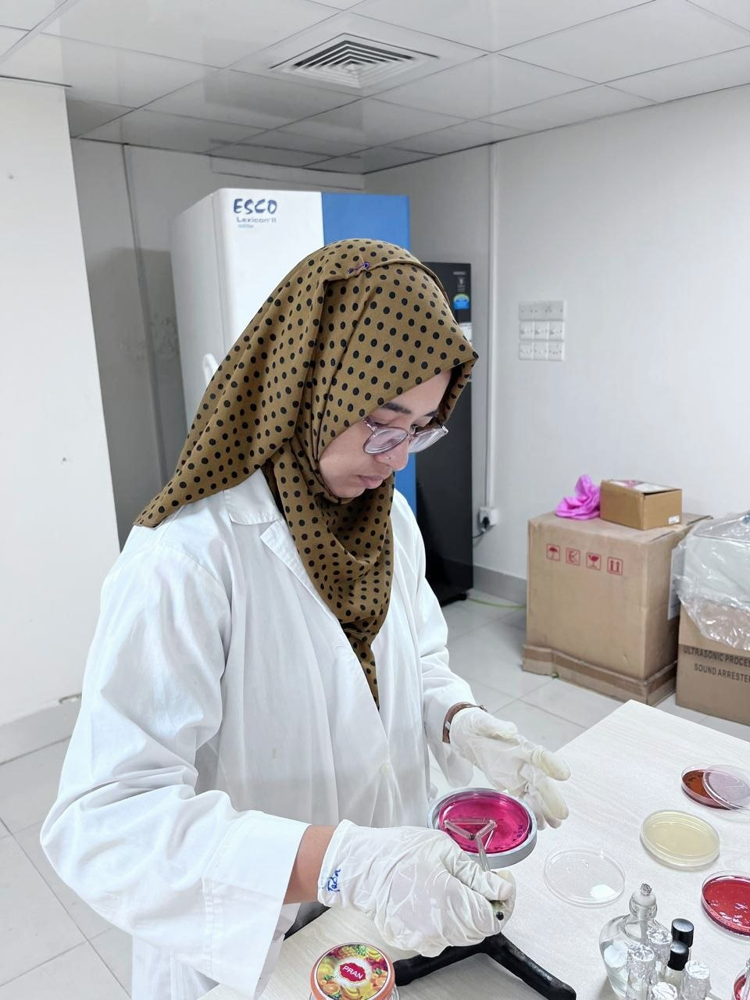
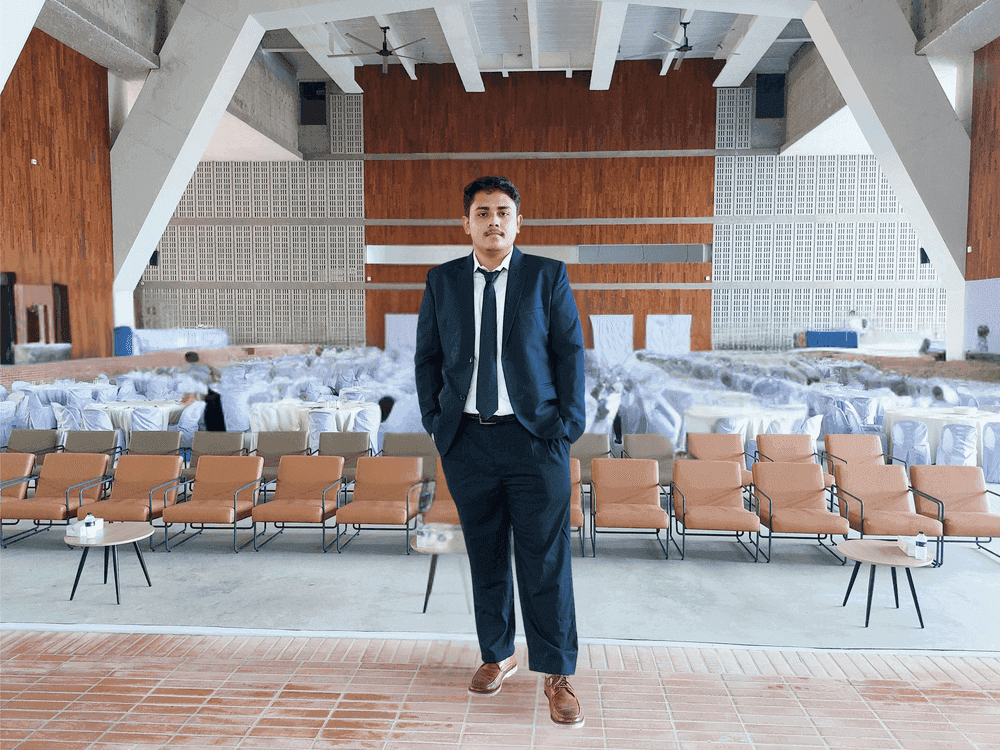
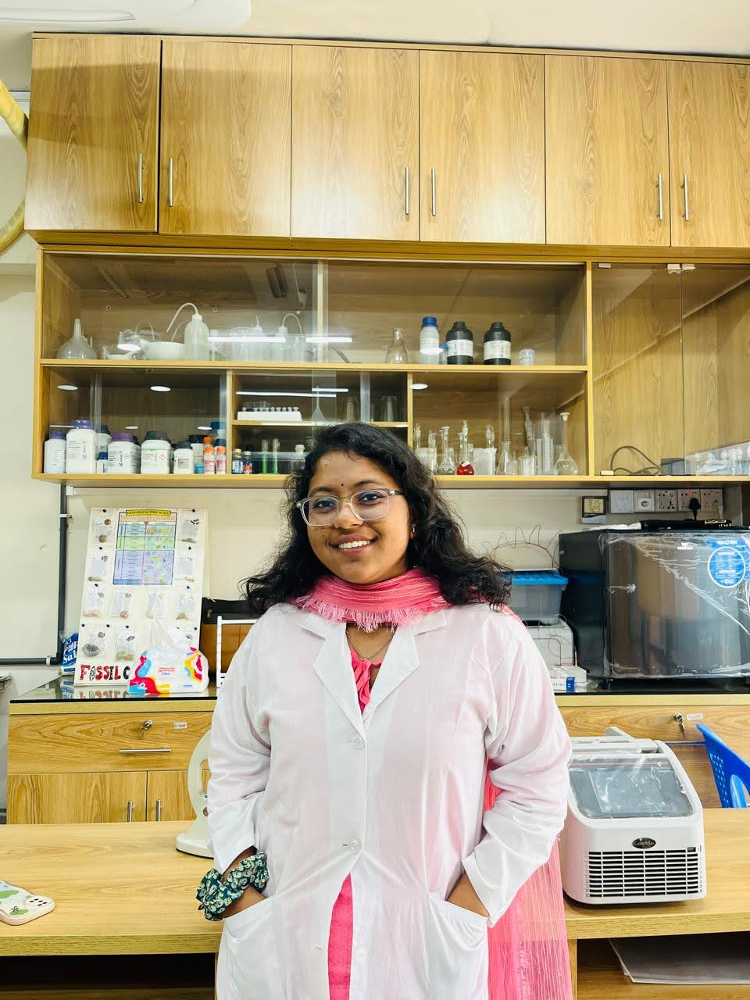
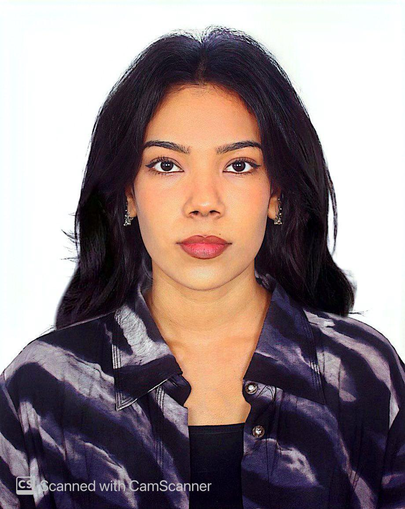
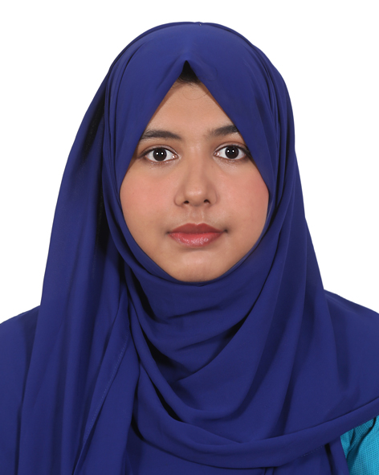
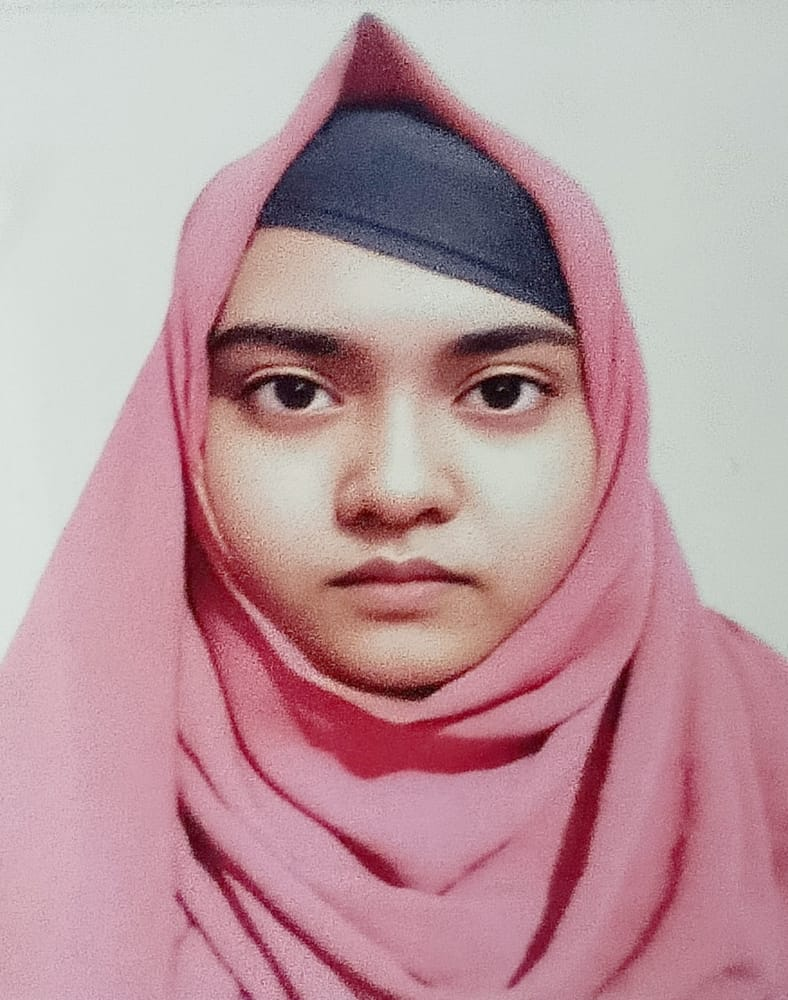
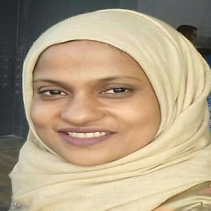

Utilizing Public Data
All datasets are publicly archived — every analysis can be independently verified and extended.
Thousands of samples across tissues, diseases, and cohorts — far beyond single-lab capacity.
FAIR data principles enable cross-study meta-analyses and collaborative discovery.
Multi-cohort validation increases confidence that findings are not dataset-specific artefacts.
Three Data Modalities
Research Workflows
Bulk RNA-Seq Meta-Analysis
Large-scale transcriptomic discovery using harmonised public datasets from NCBI GEO & SRA
Single-Cell Harmonised Framework
Cross-cohort single-cell atlas construction and comparative cell-state analysis
ML / DL in Genomics
Machine and deep learning for biomarker discovery, disease classification, and precision medicine
Mentoring






Collaborators

Dr. Syeda Tasneem Towhid Associate Professor Department of Microbiology, Jagannath University, Bangladesh
Dr. Zeba Islam Seraj Director cBLAST, University of Dhaka, Bangladesh
Dr. Md. Salequl Islam Professor Department of Microbiology, Jahangirnagar University, Bangladesh
Dr. Iqbal Mahmud Senior Research Scientist Department of Bioinformatics and Computational Biology, MD Anderson, USA
Yeon Ju Kim Associate Professor Department of Convergent Biotechnology & Advanced Materials Science, Kyung Hee University, South Korea, USA
If you have a dataset, a clinical question, or a study that would benefit from bulk / single-cell / spatial re-analysis or ML modelling, get in touch.
Start a conversation →